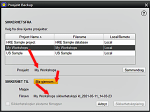

Denne skjermen lar deg sikkerhetskopiere et eksisterende HRE-prosjekt, enten prosjektet er åpent i HRE eller ikke. Du kan velge destinasjon for sikkerhetskopifilen, og velge om du også vil sikkerhetskopiere eksterne mapper som er en del av prosjektet. Standard sikkerhetskopiplassering kan angis i Verktøy > Innstillinger > Bruker > Filplasseringer. 1. Velg PROJEKT >> SIKKERHETSPROJEKT og uthev ønsket prosjekt fra listen som presenteres 2. HRE vil nå vise filnavnet som skal brukes på sikkerhetskopien, som er prosjektnavnet med gjeldende tid og dato lagt til. På dette punktet er det et alternativ å vise en SAMMENDRAG for det valgte prosjektet 3. Klikk på BLIKK for å finne mappen der sikkerhetskopien skal lagres. Selv om standardmappen vises (som definert i HRE-innstillingene for filplasseringer), kan du bla for å velge hvilken som helst annen plassering. Filen får automatisk det komprimerte suffikset for .hrez. Når ønsket lokasjonsmappe er i vinduet, trykker du ENTER for å velge den 4. Du kan nå velge å også sikkerhetskopiere eksterne filmapper (bilder, dokumenter, lydfiler, videoer osv.) Som er tilknyttet dette prosjektet ved å merke av i valgboksen. Dette åpner et nytt vindu som lar deg velge en eller flere mapper som skal sikkerhetskopieres og angi hvor du vil lagre dem, noe som kan være forskjellig fra prosjektets sikkerhetskopieringssted. Sikkerhetskopifilnavnet inneholder navnet på den originale mappen og vil være en standard zip-filtype. 5. Klikk nå SIKKERHETSKOPIERING for å starte prosessen. Hvis det nominerte prosjektet for øyeblikket er åpent i HRE, blir det først stengt, og deretter starter sikkerhetskopien. Prosjektdatabasen blir sikkerhetskopiert først, etterfulgt av eksterne filmapper (hvis du spesifiserte noen) 6. Alternativt kan du velge AVBRYT hvis sikkerhetskopiering ikke lenger er nødvendig. |
|
Relaterte Temaer |